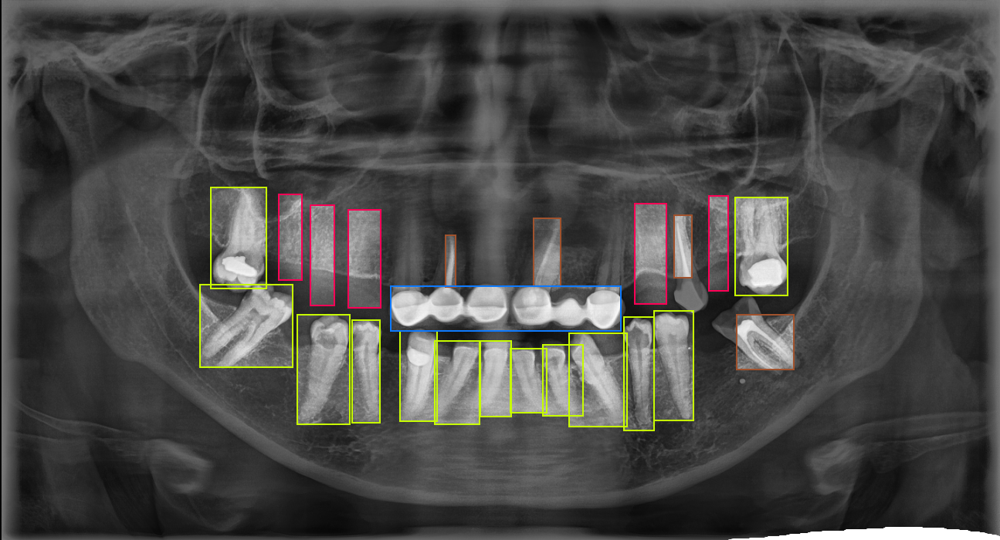
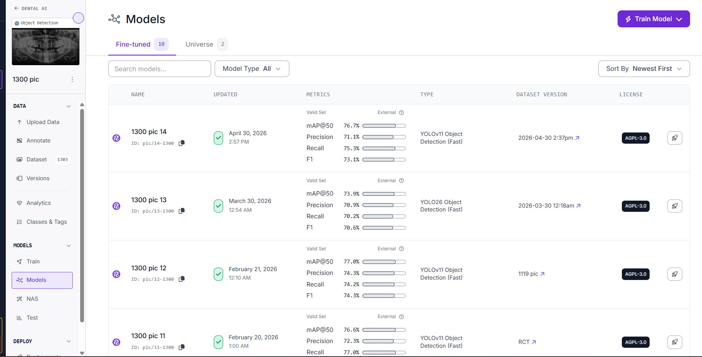
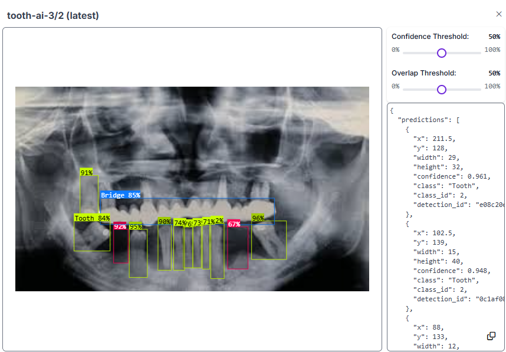
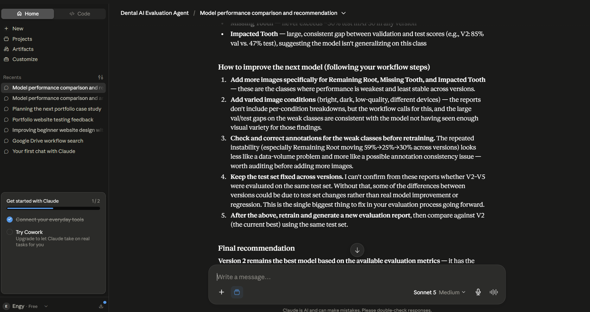

Dental AI • Computer Vision • Medical Imaging
DentalVision AI
DentalVision AI is an end-to-end computer vision project for panoramic dental imaging. I prepared and reviewed the dataset, evaluated AI model performance, compared multiple computer vision models and developed structured workflows for AI evaluation and prompt engineering.
The project later evolved into an AI-powered comparison assistant to support model evaluation and decision-making.
My Contribution
- Annotated and quality-reviewed 1,300 panoramic dental X-rays.
- Trained and evaluated more than 10 dental AI models.
- Compared model performance across multiple experiments.
- Developed an AI agent for model comparison and evaluation.
- Designed structured workflows for AI model evaluation.
Project Gallery
Inside the DentalVision workflow
A closer look at the annotation, model training, testing and AI-assisted comparison stages of the project.

Dataset Annotation
Panoramic X-ray Annotation
Creating and reviewing structured annotations for panoramic dental X-rays before model training.

Model Training
Training 10+ AI Models
Training and evaluating multiple computer vision models using different datasets and configurations.

Model Evaluation
Testing Predictions
Reviewing prediction accuracy, comparing results and identifying opportunities for improving model performance.

AI Agent
Model Comparison Assistant
An AI-powered assistant created to compare model outputs and support the evaluation workflow.